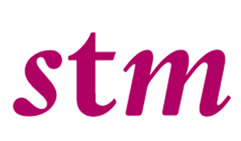

Does the Guest Editor have to submit manuscripts to his/her Special Issue?

If the journal requires charges:
The Guest Editorial team as a whole can contribute a maximum of four papers to their Special Issue. Of these four, an introductory short Editorial and a long review article are exempt from the journal’s regular Article Processing Charges.  To avoid any conflict of interest, submissions from a Guest Editor will be handled by an Editorial Board Member rather than another member of the Guest Editorial team. The short introductory Editorial, which can be submitted once the review processes of all submitted manuscripts are finalized, will not undergo the standard review process.
The Guest Editorial team as a whole can contribute a maximum of four papers to their Special Issue. Of these four, an introductory short Editorial and a long review article are exempt from the journal’s regular Article Processing Charges. The short introductory Editorial, which can be submitted once the review processes of all submitted manuscripts are finalized, will not undergo the standard review process.
The Guest Editorial team as a whole can contribute a maximum of four papers to their Special Issue.
If the journal does not require charges:
The Guest Editorial team as a whole can contribute a maximum of four papers to their Special Issue, including an introductory short Editorial and a long review article. To avoid any conflict of interest, submissions from a Guest Editor will be handled by an Editorial Board Member rather than another member of the Guest Editorial team. Once the review processes of all submitted manuscripts are finalized, the Guest Editors will be asked to submit the introductory Editorial, which will not undergo the standard review process.
| Text | Text | Text |
| Text | Text | Text |
| Text | Text | Text |